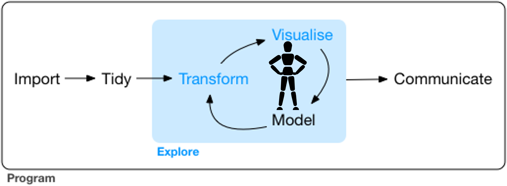
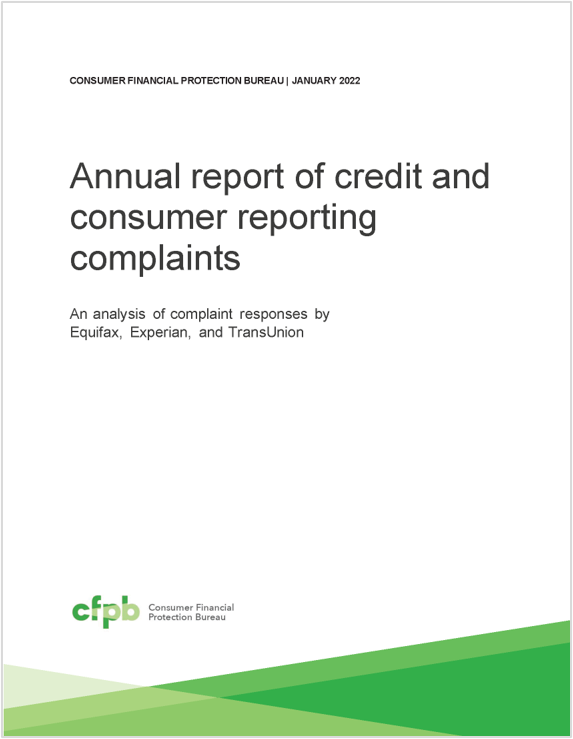
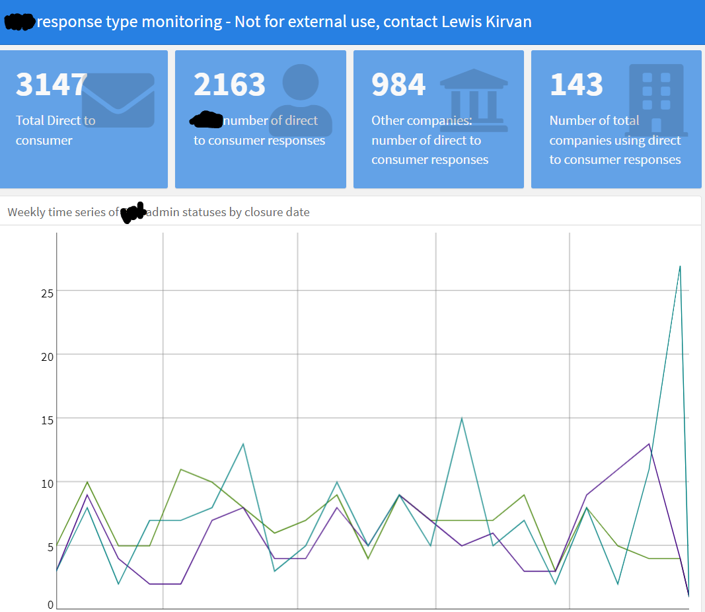
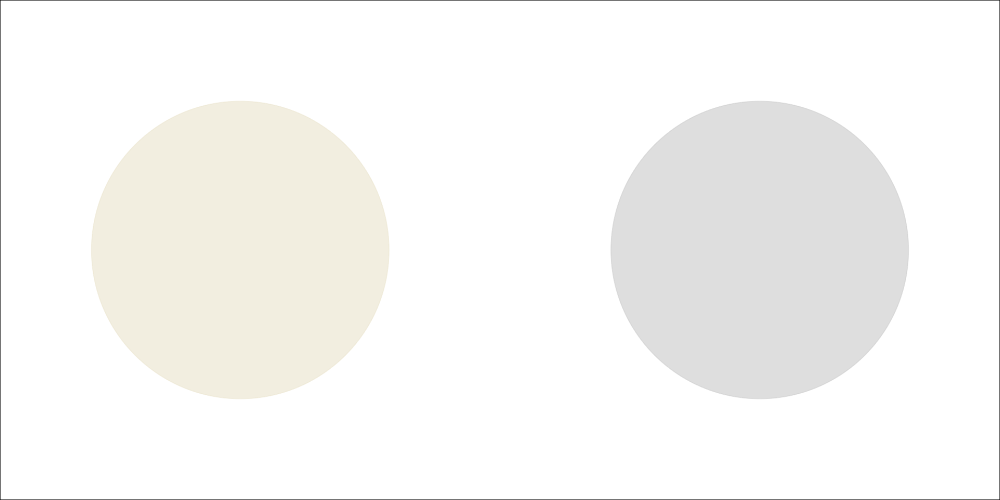
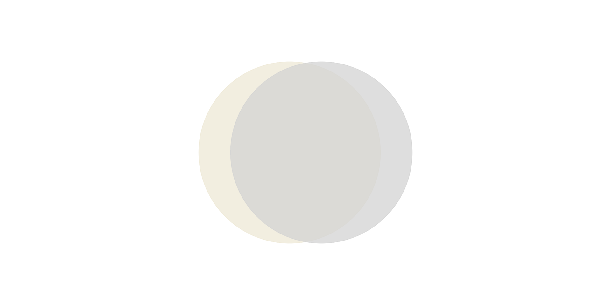
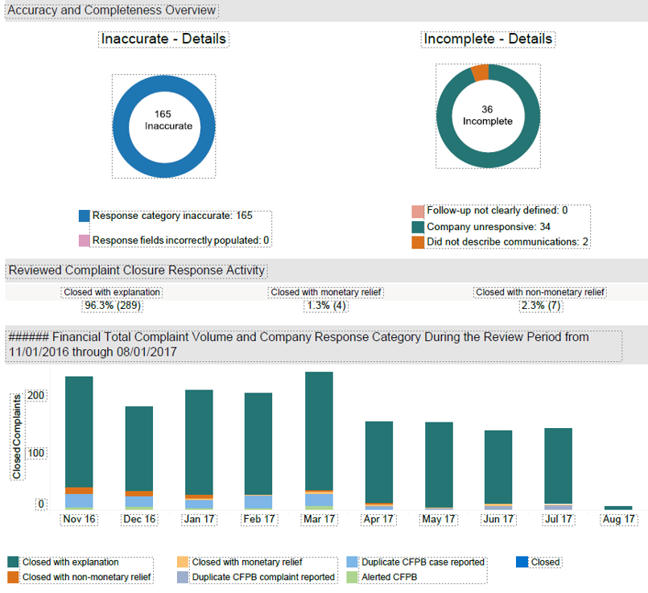
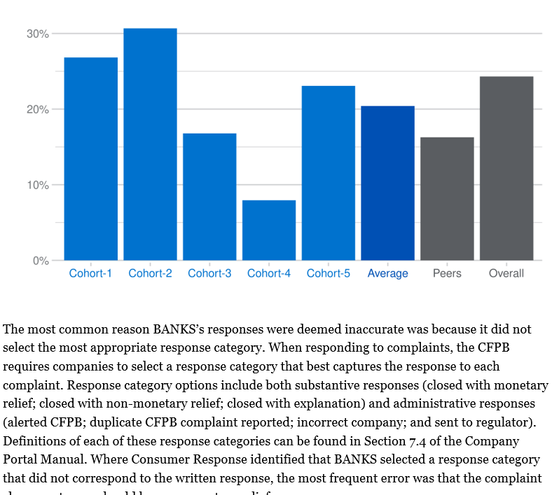
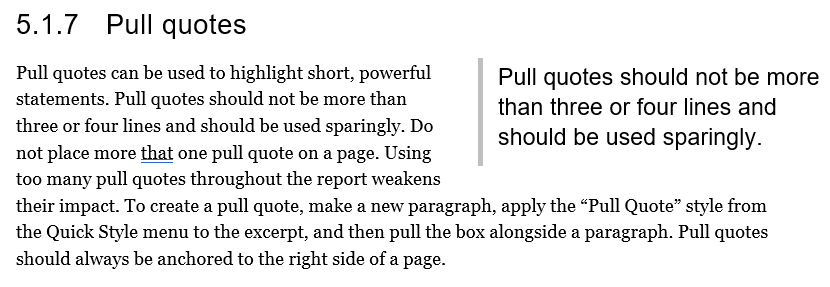

Sometimes you just need words
A story with two chapters:
- When you need more words.
- How to make words (a bit) easier!
Chapter 1:
When you need more words
Possibly the most familiar diagram at this conference

You are in the middle of that cycle

Some Stuff you might do along the way:
- Look at the application that generates the data
- Read the survey instrument
- Talk to application users
- Read data documentation (if you are so lucky)
- Read relevant research
- Talk to experts that know about how and why the data was generated
Time to communicate
Time to communicate think about your audience
Bring people along on your journey
Two limit cases: Congress | your immediate team


Congress
- 6 charts
- 2 tables
- 50 pages of context
Two limit cases: Congress | your immediate team
your immediate team
- 3 charts
- 6 KPIs
- less than a paragraph of text
Less shared context means more context (AKA WORDS) needs to be included in your product.
More shared context means you can include less context in your product (but you still document it!)
Example : Moving from team communication to external communication

- interactive Tableau dashboard
- high chart density (dozens!)
- field names correspond to internal system
Example : Moving to an External audience of bank employees

- 3 simple static charts
- Some of the charts from the internal dashboard are now sentences!
- Names are defined in an introduction
- Different explanatory paragraphs are included depending on data
key factors
External
Less technical
Decision makers
Time crunched
Chapter 2:
How to make words (a bit) easier!
RMARKDOWN RMARKDOWN RMARKDOWN RMARKDOWN
QUARTO QUARTO QUARTO QUARTO QUARTO QUARTO QUARTO QUARTO
Tips
Use templates
Use design resources
Partner up
Tip 1 Use a template language or string interpolation
Tip 1 Use a template language or string interpolation
Tip 1A use lists as a ‘namespace’
whisker_data <- list(
species = "virginica"
, mean_length = iris %>%
filter(Species == "virginica") %>%
pull(Petal.Length) %>%
mean()
, overall_mean = mean(iris$Petal.Length)
, field_name = "petal length"
, other = iris %>%
filter(Species != "virginica") %>%
pull(Species) %>%
unique() %>%
as.character() %>% str_pad(., width = nchar(.) + 1)
)
whisker_data$greater_less <- with(
whisker_data
, ifelse(mean_length > overall_mean
, "longer"
, "shorter")
)Tip 1A use lists as a ‘namespace’
A typical {{species}} iris has {{greater_less}} {{field_name}} than other iris species ({{other}}).
A typical virginica iris has longer petal length than other iris species ( setosa, versicolor).
“A typical virginica iris has longer petal length than other iris species ( setosa, versicolor).”
Tip 2 : Use existing design resources
Tip 2A Use existing document templates so you never have to copy+paste again
it’s almost as easy as this:
Tip 2A Use existing document templates
Then use pandoc to reference your fancy custom styles like so:
Tip 2B Package up your design system
A minimal package that will save you tons of time:
- put your organization colors in an easy to access list
- a ggplot theme that gets you most of the way to publication ready
Partner with a writer
They can help you with lots of stuff:
- grammar, the grammar for language
- an outside opinion (does it make sense?)
- thinking even more about what your audience cares about.